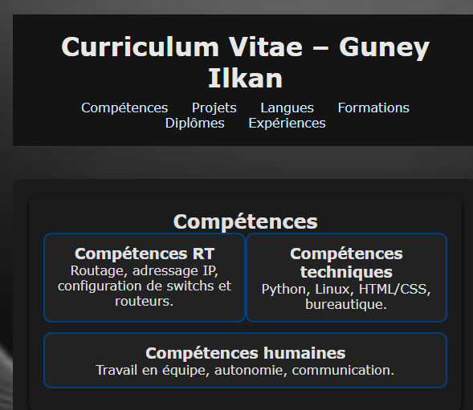
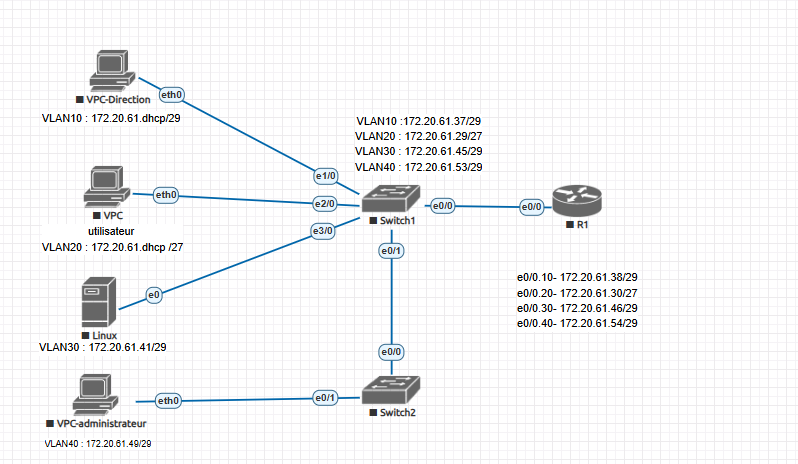
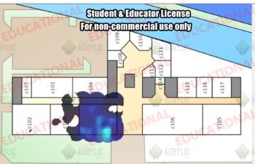
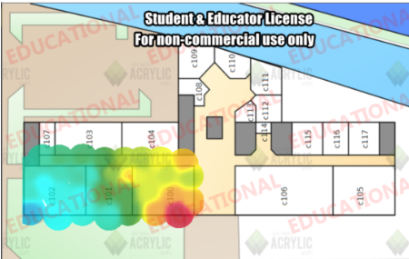
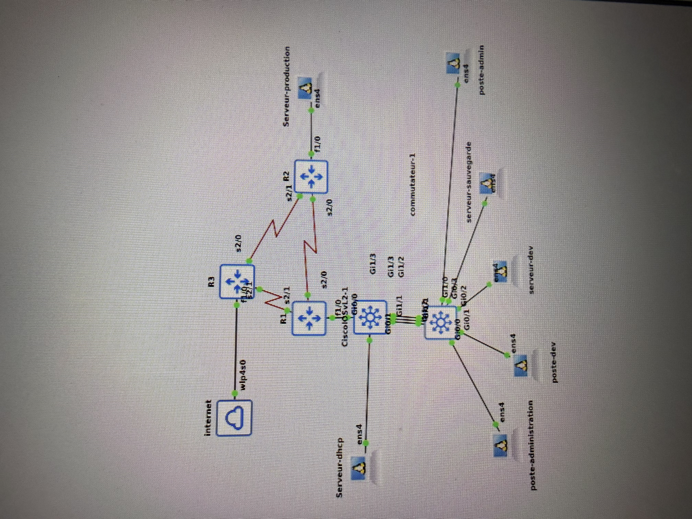
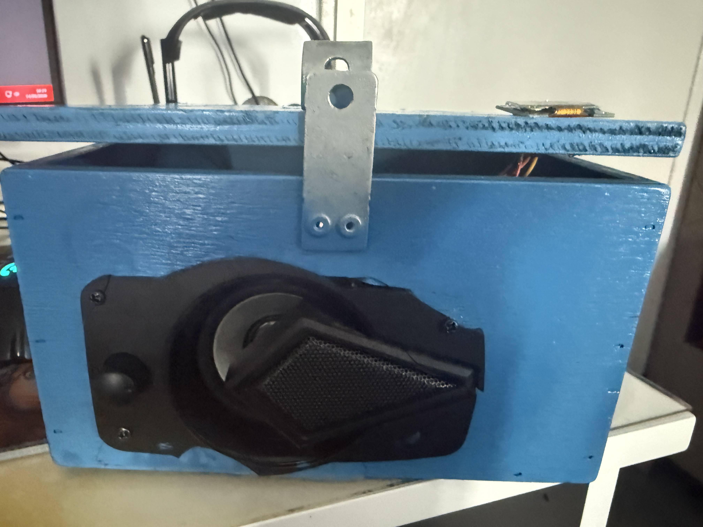

Projets & SAÉ
Situations d'Apprentissage et d'Évaluation réalisées en BUT R&T.
Se présenter sur Internet
L'objectif de cette SAÉ était de créer un CV en ligne en HTML et CSS afin de se présenter sur Internet. J'ai réalisé un site web multi-pages comprenant une page d'accueil, un parcours, des compétences et un formulaire de contact. J'ai appris à structurer du contenu HTML, à styliser avec CSS, à rendre le site responsive pour mobile. Ce projet m'a permis d'acquérir la compétence AC13.04 (architecture et technologies d'un site web).

Capture du CV interactif réalisé en HTML/CSSS'initier au réseau informatique
Dans cette SAÉ, nous devions concevoir et réaliser un réseau informatique pour une entreprise en utilisant le simulateur EVE-NG. J'ai configuré des routeurs et commutateurs Cisco, mis en place des VLANs, du routage inter-VLAN et des adresses IP statiques. Ce projet m'a permis d'acquérir la compétence AC11.03 (configurer les fonctions de base du réseau local) et de comprendre l'architecture réseau d'une entreprise.

Topologie réseau réalisée sous EVE-NG avec routeurs et commutateurs CiscoDécouvrir un dispositif de transmission
Cette SAÉ portait sur l'analyse et la caractérisation des réseaux sans fil Wi-Fi au sein d'un bâtiment. Nous avons utilisé des outils comme WiFi Analyzer et un logiciel de heatmap pour visualiser la couverture radio selon les différents standards : 802.11a (5 GHz) et 802.11g (2.4 GHz). L'objectif était de mesurer les zones de couverture, identifier les zones mortes, comparer les portées et débits des deux standards, puis présenter les résultats à l'oral. Cela m'a permis d'acquérir les compétences AC12.01 (mesurer et analyser des signaux) et AC12.03 (déployer des supports de transmission), ainsi que AC12.05 (communiquer les résultats).

📶 Heatmap réseau 802.11a (5 GHz) — couverture limitée mais stable
📡 Heatmap réseau 802.11g (2.4 GHz) — meilleure portéeLa heatmap en bleu (802.11a) montre une couverture plus concentrée et moins longue portée sur 5 GHz. La heatmap colorée (802.11g) illustre une meilleure pénétration sur 2.4 GHz avec une zone de couverture plus étendue, mais avec plus d'interférences potentielles. Ces mesures nous ont permis de recommander les bons points d'accès selon les besoins.
Construire un réseau informatique pour une petite structure
Extension de la SAÉ 1.02, cette SAÉ visait à concevoir un réseau complet pour une petite structure avec des services avancés. Nous avons configuré plusieurs VLANs (administration, production, développement, sauvegarde), du routage inter-VLAN, un serveur DHCP pour l'attribution automatique des adresses IP, et un serveur FTP pour le partage de fichiers. L'infrastructure complète incluait routeurs Cisco (R1, R2, R3), commutateurs Layer 2 et Layer 3, et plusieurs postes clients/serveurs Linux.

Architecture réseau complète — routeurs R1/R2/R3, commutateurs Cisco L2/L3, serveurs DHCP/FTP sous EVE-NGMesurer et caractériser un signal ou un système
Pour cette SAÉ, j'ai conçu et fabriqué une radio portable entièrement fonctionnelle. J'ai utilisé une structure en bois que j'ai découpée et assemblée moi-même, dans laquelle j'ai intégré 3 membranes (haut-parleurs), un écran d'affichage qui montre les stations en cours, et un module radio contrôlable via une application Android. Ce projet m'a permis de comprendre les principes de transmission radio FM, la modulation de signal, et l'intégration de composants électroniques dans un boîtier physique. Il correspond aux compétences AC12.02 (caractériser des systèmes de transmission) et AC12.01 (mesurer et analyser des signaux).

Vue de face — haut-parleur principal intégré dans le boîtier bois peint.jpeg) Vue latérale — tweeter vissé sur le côté du boîtier
Vue latérale — tweeter vissé sur le côté du boîtier
.jpeg) Vue du dessus — écran OLED affichant la station et membrane centrale
Vue du dessus — écran OLED affichant la station et membrane centrale